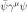
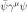
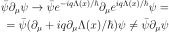
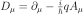
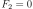
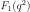
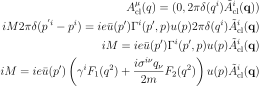
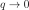
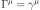
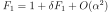

8.3. Quantum Electrodynamics (QED)¶
8.3.1. Local Gauge Invariance¶
We use a metric with signature +2 in this section.
The Dirac equation for an electron is:
Physical quantities like a charge density ( ) or a current
(), are all invariant if we add a local phase
) or a current
(), are all invariant if we add a local phase
 to the field (this is called a local U(1) gauge transformation):
to the field (this is called a local U(1) gauge transformation):

Where  is a parameter that measures the strength of the phase transformation
(this will be later interpreted as a charge, for example for electrons
) and
is a parameter that measures the strength of the phase transformation
(this will be later interpreted as a charge, for example for electrons
) and  is the Planck constant. And so we require that the
Lagrangian is also invariant under the local gauge transformation, because
there is no experiment that would change if this local gauge transformation is
applied on the wave functions. By putting this gauge transformation into the
Lagrangian density, we otain:
is the Planck constant. And so we require that the
Lagrangian is also invariant under the local gauge transformation, because
there is no experiment that would change if this local gauge transformation is
applied on the wave functions. By putting this gauge transformation into the
Lagrangian density, we otain:
The reason the Lagrangian is not invariant is due to the derivative, which does not transform covariantly under a local gauge transformation:

In order to make the derivative transform covariantly (and thus the Lagrangian gauge invariant), we have to introduce a gauge field, in this case a vector field , as follows:
(8.3.1.1)¶
and the field  must transform as . At this level, we are free to choose either plus or
minus sign in (8.3.1.1), since the sign change can be absorbed
in the definition of the field without loss of generality (if we change
the sign, the field transformation then changes to ). In the +2 metric signature we chose a minus sign, so
that coincides with the usual definition of the electromagnetic
4-potential:
must transform as . At this level, we are free to choose either plus or
minus sign in (8.3.1.1), since the sign change can be absorbed
in the definition of the field without loss of generality (if we change
the sign, the field transformation then changes to ). In the +2 metric signature we chose a minus sign, so
that coincides with the usual definition of the electromagnetic
4-potential:
With signature -2, we must choose a plus sign and the identification goes as follows:
And we obtain the same final equation. So the kinematic momentum is equal to
canonical momentum minus charge times the gauge field. The last expression is
independent of a metric signature, and that is what is e.g. in the kinetic term
of a Schrödinger or Pauli equation (with the minus sign in ). We derive the non-relativistic limit rigorously later, but it gives
the same result. At this level we just have to make sure we choose the correct
sign in (8.3.1.1), depending on the metric signature,
otherwise we would get the electromagnetic 4-potential with the opposite sign
(the sign of is ultimately just a convention, but later we want to get
the same equations as everybody else).
Another unrelated convention is in choosing the sign of the parameter . We
have choosen it to coincide with an electric charge (negative for electrons).
Some authors choose to be positive for electrons, then one must flip the
sign in (8.3.1.1).
We will continue using the +2 signature in the rest of the section.
The operator  is called a covariant derivative, because it does not change a form (is invariant) under a local gauge transformation:
Then the Lagrangian
(8.3.1.2)¶
is also gauge invariant:
The Lagrangian (8.3.1.2) can also be written as:
We can see that the condition of a local gauge invariance requires an
interaction with a vector field . Now we need to add the kinetic term
for the field :
The mass term is not gauge invariant, and so we have to
set  . Here is the full Lagrangian:
. Here is the full Lagrangian:
This is a Lagrangian for an electron and a massless vector boson (photon) of
spin 1. We can introduce a current  ,
then the Lagrangian density becomes:
,
then the Lagrangian density becomes:
For an electron, we can set , where  is the elementary charge ( is
positive).
is the elementary charge ( is
positive).
8.3.2. QED Lagrangian¶
We use a metric with signature -2 in this section.
The QED Lagrangian density is
where
and we must choose a plus sign in (8.3.1.1) since we use the -2 signature:
is the charge (negative for electrons  ).
).
is the electromagnetic field tensor. It’s astonishing, that this simple Lagrangian can account for all phenomena from macroscopic scales down to something like . So it’s not a surprise that Feynman, Schwinger and Tomonaga received the 1965 Nobel Prize in Physics for such a fantastic achievement.
Plugging this Lagrangian into the Euler-Lagrange equation of motion for a field, we get:

The first equation is the Dirac equation in the electromagnetic field and the
second equation is a set of Maxwell equations () with a source  , which is a
4-current comming from the Dirac equation.
, which is a
4-current comming from the Dirac equation.
8.3.3. Magnetic moment of an electron¶
In this section we derive the order- correction to the magnetic moment
of an electron.
correction to the magnetic moment
of an electron.
We start by computing the electron vertex function for the process :
where  corresponds to some heavy target. If is a fixed
classical potential, we get:
corresponds to some heavy target. If is a fixed
classical potential, we get:
Using general arguments (Lorentz invariance, parity-conservation, Ward
identity) we can always write  as:
as:
where and ar unknown functions of called form factors. As we will see below, in the lowest order we get and .
We can calculate the amplitude for elastic Coulomb scattering of a nonrelativistic electron from a region of nonzero electrostatic potential by setting , then:
If the electrostatic field is very slowly varying over a large (even
macroscopic) region, will be concentrated about  , then we can take the limit :
, then we can take the limit :

This corresponds to the Born approximation for scattering from a potential
Thus is the electric charge of the electron, in units of . Since
already in the first order of perturbation theory, radiative
corrections to  must vanish at  .
.
Now we calculate the scattering from a static vector potential by setting , then:

In the limit  this becomes:
where
is the Fourier transform of the magnetic field produced by .
This corresponds to the Born approximation for scattering from a potential
where
where
The coefficient  is called the Landé g-factor, and since the leading order
of perturbation theory gives (and we know that
is called the Landé g-factor, and since the leading order
of perturbation theory gives (and we know that  to all
orders), we get:
to all
orders), we get:
This is the standard prediction of the Dirac equation. The anomalous magnetic moment is then:
To calculate that, we need to evaluate the one-loop correction to the vertex function, so we start by deriving the appropriate Green function for the process :
![\ket{i} = a^{r\dag}_{\bf q} b^{t\dag}_{\bf p} \ket{\Omega}
\ket{f} = b^{s\dag}_{\bf p'} \ket{\Omega}
\braket{f|i} =\bra{\Omega} b^s_{\bf p'} a^{r\dag}_{\bf q}
b^{t\dag}_{\bf p} \ket{\Omega} =
=\bra{\Omega}T b^s_{\bf p'} a^{r\dag}_{\bf q}
b^{t\dag}_{\bf p} \ket{\Omega} =
=\bra{\Omega}T
\bar u^s({\bf p'}){1\over\tilde S(p')}\tilde \psi(p')
\epsilon_\mu^{r*}({\bf q}){q^2\over i} \tilde A^\mu(-q)
\tilde{\bar\psi}(-p){1\over\tilde S(-p)}u^t({\bf p})
\ket{\Omega} =
=\bar u^s({\bf p'}){1\over\tilde S(p')}
\epsilon_\mu^{r*}({\bf q}){q^2\over i}
\bra{\Omega}T
\tilde \psi(p')
\tilde A^\mu(-q)
\tilde{\bar\psi}(-p)
\ket{\Omega}{1\over\tilde S(-p)}u^t({\bf p}) =
=\bar u^s({\bf p'}){1\over\tilde S(p')}
\epsilon_\mu^{r*}({\bf q}){q^2\over i}
\tilde G(p, p', q)
{1\over\tilde S(-p)}u^t({\bf p}) =](../_images/math/783e6113a63062beceed7f8b1d9097a644387591.svg)
where:
is the interacting Green function for the Lagrangian . In the first order:
![\tilde G(p, p', q) = \bra{\Omega}T \tilde\psi(p') \tilde A^\mu(-q)
\tilde{\bar\psi}(-p)
\ket{\Omega} =
= \int \d^4 x \bra{0}T \tilde\psi(p') \tilde A^\mu(-q)
\tilde{\bar\psi}(-p)
(-\lambda)\bar e(x) \gamma^\rho e(x) A_\rho(x)
\ket{0} =
= (-\lambda)\int \d^4 x \d\hat p'\d\hat q\d\hat p
e^{i\hat p'p' - \hat q q
-\hat pp}
\bra{0}T \psi(\hat p') A^\mu(\hat q)
{\bar\psi}(\hat p)
\bar e(x) \gamma^\rho e(x) A_\rho(x)
\ket{0} =
= (-\lambda)\int \d^4 x \d\hat p'\d\hat q\d\hat p
e^{i\hat p'p' - \hat q q
-\hat pp}
D^\mu_\rho(\hat q-x) S(\hat p' - x)\gamma^\rho S(\hat p-x)
=
= (-\lambda)(2\pi)^4\delta(p'-q-p)
\tilde D^\mu_\rho(q) \tilde S(p')\gamma^\rho \tilde S(p)](../_images/math/c1ca92484d51acd2e2c9b57a1c3fcadd4b2e462e.svg)
so the amplitude is:
and we got , so  and
and  in the lowest
order. In the next order we get:
in the lowest
order. In the next order we get:
Now we can write:
![\bar u(p')\Gamma^\mu(p', p) u(p) =
\bar u(p')(\gamma^\mu + \delta\Gamma^\mu) u(p)
\bar u(p')\delta\Gamma^\mu(p', p) u(p) =
\int {\d^4 k\over (2\pi)^4} \tilde D_{\nu\rho}(k-p)
\bar u(p')
(-ie\gamma^\nu)
\tilde S(k')
\gamma^\mu
\tilde S(k)
(-ie\gamma^\rho)
u(p) =
=
\int {\d^4 k\over (2\pi)^4} {-ig_{\nu\rho}\over (k-p)^2 +i\epsilon}
\bar u(p')
(-ie\gamma^\nu)
{i(\fslash k' + m)\over k'^2-m^2 +i\epsilon}
\gamma^\mu
{i(\fslash k + m)\over k^2-m^2 +i\epsilon}
(-ie\gamma^\rho)
u(p) =
= 2ie^2\int {\d^4 k\over (2\pi)^4}
{\bar u(p') \left(
\fslash k \gamma^mu \fslash k' + m^2\gamma^\mu - 2m(k+k')^\mu
\right) u(p) \over
((k-p)^2 + i\epsilon)(k'^2 - m^2 + i\epsilon)(k^2-m^2+i\epsilon)
}=
= \cdots =
= 2i e^2 \int {\d^4 l\over (2\pi)^4} \int_0^1 \d x \,\d y \,\d z\,
\delta(x+y+z-1)
{2\over D^3} \bar u(p') \left(
\gamma^\mu (-\half l^2+ (1-x)(1-y)q^2 + (1-4z+z^2)m^2)
+ {i\sigma^{\mu\nu}q_\nu\over 2m} (2m^2 z(1-z))
\right)u(p) =
= {\alpha\over 2\pi} \int_0^1 \d x \,\d y \,\d z\,
\delta(x+y+z-1)
\bar u(p') \left(
\gamma^\mu \left[\log {z \Lambda^2\over\Delta} + {1\over\Delta}
\left((1-x)(1-y)q^2 + (1-4z+z^2)m^2\right)\right]
+ {i\sigma^{\mu\nu}q_\nu\over 2m}\left[{1\over\Delta}2m^2 z(1-z)
\right] \right)u(p)](../_images/math/d59195da8284ea462c27d0fbdd7ba4045a8e8886.svg)
where
So the expressions for the form factors are:
![F_1(q^2) = 1 + {\alpha\over 2\pi} \int_0^1 \d x \,\d y \,\d z\,
\delta(x+y+z-1)
\left[\log {z \Lambda^2\over\Delta} + {1\over\Delta}
\left((1-x)(1-y)q^2 + (1-4z+z^2)m^2\right)\right]
+O(\alpha^2)
F_2(q^2) = {\alpha\over 2\pi} \int_0^1 \d x \,\d y \,\d z\,
\delta(x+y+z-1)
\left[{1\over\Delta}2m^2 z(1-z) \right]
+O(\alpha^2) =
= {\alpha\over 2\pi} \int_0^1 \d x \,\d y \,\d z\,
\delta(x+y+z-1)
\left[2m^2 z(1-z)\over m^2(1-z)^2 - q^2 xy \right]
+O(\alpha^2)](../_images/math/984730ed6c903bc45ca4cb658d783570213e795c.svg)
contains both ultraviolet and infrared divergencies. To cure the infrared
divergence, we add a term  to
to  . To cure the ultraviolet
divergence, we make the substitution:
. To cure the ultraviolet
divergence, we make the substitution:
where is the first order (in ) correction to (i.e.
):
so the corrected is:
![F_1(q^2) = 1 + {\alpha\over 2\pi} \int_0^1 \d x \,\d y \,\d z\,
\delta(x+y+z-1)
\left[\log {z \Lambda^2\over\Delta} + {1\over\Delta}
\left((1-x)(1-y)q^2 + (1-4z+z^2)m^2\right)+\right.
\left.-\log {z \Lambda^2\over\Delta (q^2=0)} - {1\over\Delta (q^2=0)}
(1-4z+z^2)m^2\right]
+O(\alpha^2) =
= 1 + {\alpha\over 2\pi} \int_0^1 \d x \,\d y \,\d z\,
\delta(x+y+z-1)
\left[\log {m^2 (1-z)^2\over m^2(1-z)^2 - q^2 x y} +
\left((1-x)(1-y)q^2 + (1-4z+z^2)m^2\over
m^2(1-z)^2 - q^2 x y +\mu^2z
\right)+\right.
\left.-{(1-4z+z^2)m^2\over m^2 (1-z)^2 + \mu^2 z}\right]
+O(\alpha^2)](../_images/math/4917f480e3a095ef1f0f0a29dabefad9f1211645.svg)
Neither the ultraviolet nor the infrared
divergence affects , so we just set  :
:
![F_2(0) = {\alpha\over 2\pi} \int_0^1 \d x \,\d y \,\d z\,
\delta(x+y+z-1)
\left[2m^2 z(1-z)\over m^2(1-z)^2 \right] +O(\alpha^2) =
={\alpha\over 2\pi} \int_0^1 \d x \,\d y \,\d z\,
\delta(x+y+z-1)
{2 z\over 1-z} +O(\alpha^2) =
={\alpha\over 2\pi} \int_0^1 \d y \int_0^1 \,\d z\,
\theta(1-(1-y-z))\theta((1-y-z)-0)
{2 z\over 1-z} +O(\alpha^2) =
={\alpha\over 2\pi} \int_0^1 \d y \int_0^1 \,\d z\,
\theta(y+z)\theta(1-y-z)
{2 z\over 1-z} +O(\alpha^2) =
={\alpha\over 2\pi} \int_0^1 \d y \int_0^1 \,\d z\,
\theta(1-y-z)
{2 z\over 1-z} +O(\alpha^2) =
={\alpha\over 2\pi} \int_0^1 \d z \int_0^{1-z} \,\d y
{2 z\over 1-z} +O(\alpha^2) =
={\alpha\over 2\pi} \int_0^1 \d z (1-z)
{2 z\over 1-z} +O(\alpha^2) =
={\alpha\over 2\pi} \int_0^1 \d z 2z + O(\alpha^2) =
= {\alpha\over 2\pi} + O(\alpha^2)](../_images/math/f20de8c835afede7b2a9aeef59fdbd87977a488e.svg)
Thus we get the correction to the -factor of the electron:
Code:
>>> from math import pi
>>> alpha = 1/137.035999049
>>> a_e = alpha / (2*pi)
>>> a_e
0.0011614097331824923
Experiments give (arXiv:1412.8284, eq. (1)).
Higher order corrections from QED can also be calculated:
we already know that . See for example hep-ph/9410248 for the expression for  :
:
Code:
>>> from sympy import zeta, S, log
>>> A_2 = S(197)/144 + zeta(2)/2 + 3*zeta(3)/4 - 3*zeta(2) * log(2)
>>> A_2.n()
-0.328478965579194
See hep-ph/9602417 for the  term:
term:
Code:
>>> from sympy import pi, zeta, S, log, sum, var, oo
>>> var("n")
n
>>> a4 = sum(1/(2**n * n**4), (n, 1, oo))
>>> A_3 = 83*pi**2*zeta(3)/72 - 215*zeta(5)/24 + 100*(a4 + log(2)**4/24 - \
... pi**2*log(2)**2/24)/3 - \
... 239*pi**4/2160 + 139*zeta(3)/18 - 298 * pi**2 * log(2)/9 + \
... 17101 * pi**2 / 810 + S(28259)/5184
>>> A_3.n()
1.18124145658720
Higher terms are only known numerically. The  and
and  terms can be found
in arXiv:1412.8284:
terms can be found
in arXiv:1412.8284:
We can now sum up to a given order by the following script:
from sympy import pi, zeta, S, log, summation, var, oo
var("n")
a4 = summation(1/(2**n * n**4), (n, 1, oo))
A1 = S(1)/2
A2 = S(197)/144 + zeta(2)/2 + 3*zeta(3)/4 - 3*zeta(2) * log(2)
A3 = 83*pi**2*zeta(3)/72 - 215*zeta(5)/24 + 100*(a4 + log(2)**4/24 - \
pi**2*log(2)**2/24)/3 - \
239*pi**4/2160 + 139*zeta(3)/18 - 298 * pi**2 * log(2)/9 + \
17101 * pi**2 / 810 + S(28259)/5184
A4 = -1.91298
A5 = 7.795
alpha = 1/137.035999049
a_e_exp = 0.00115965218073
a_e_exp_err = 0.00000000000028
a_e_other = 0.00000000000448
A = [A1, A2, A3, A4, A5]
a_e= []
for i in range(len(A)):
a_e.append((A[i]*(alpha/pi)**(i+1)).n())
print "========== ================"
print "Order :math:`a_e`"
print "========== ================"
for i in range(len(A)):
print "%d %16.14f" % (i+1, sum(a_e[:i+1]))
print "Other %16.14f" % a_e_other
print "Total %16.14f" % (sum(a_e) + a_e_other)
print "Experiment %16.14f" % a_e_exp
print "Difference %16.14f" % abs(sum(a_e) + a_e_other - a_e_exp)
print "Exp. err %16.14f" % a_e_exp_err
print "========== ================"
and obtain the following table:
Order |
|
|---|---|
1 |
0.00116140973318 |
2 |
0.00115963742812 |
3 |
0.00115965223232 |
4 |
0.00115965217663 |
5 |
0.00115965217716 |
Other |
0.00000000000448 |
Total |
0.00115965218164 |
Experiment |
0.00115965218073 |
Difference |
0.00000000000091 |
Exp. err |
0.00000000000028 |
The “Other” line are contributions from the dependence on the muon and tau particle masses, the hadronic vacuum-polarization, the hadronic light-by-light-scattering and the electroweak contribution (see arXiv:1412.8284). The “Difference” line is the difference from the theory (the “Total” line) and experiment. The “Exp. err” line is the experimental error.
At this level of accuracy, the uncertainty of the exact value of is
the primary cause of the difference from experiment, and one can use this
result to predict a more accurate value for , assuming that QED and the
standard model are valid.